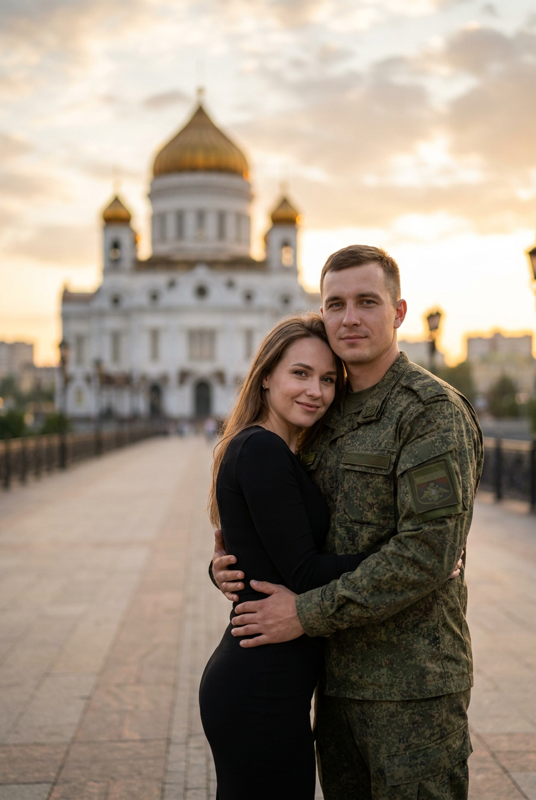
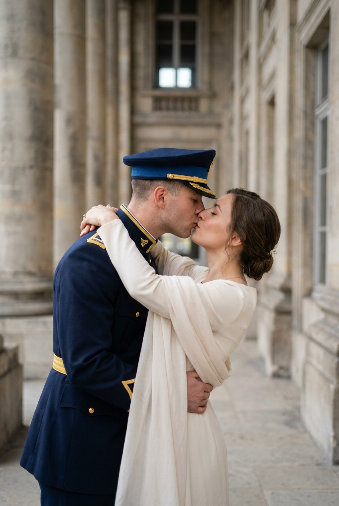
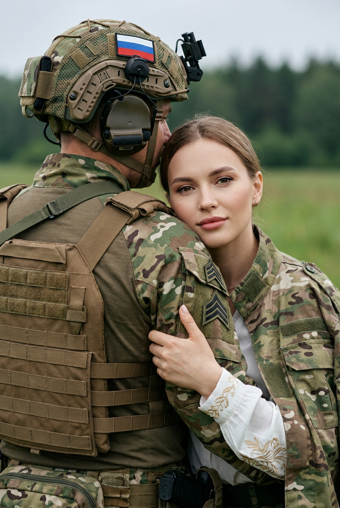
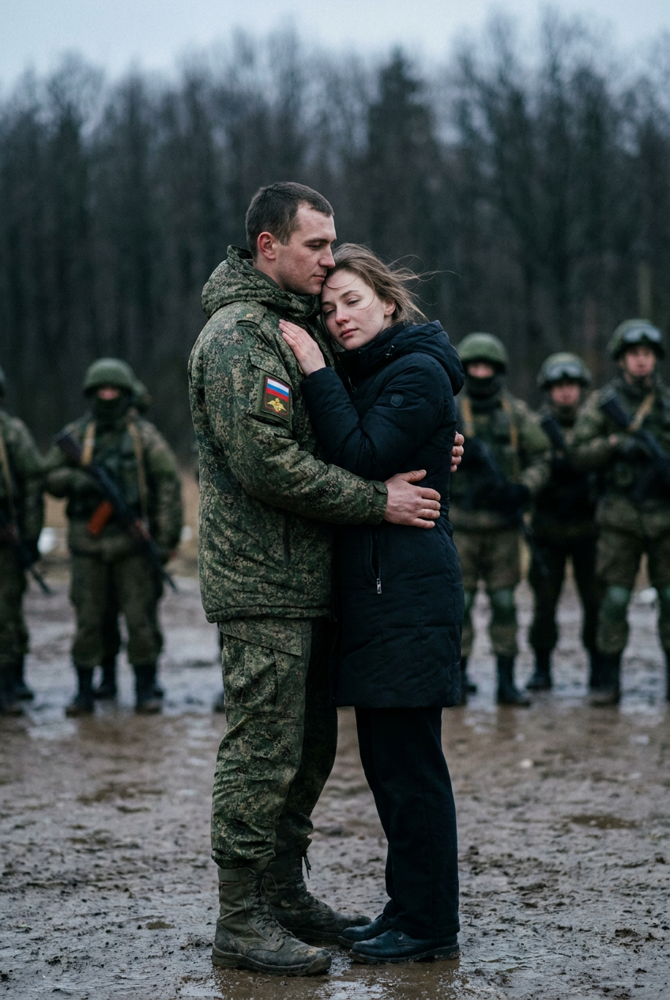
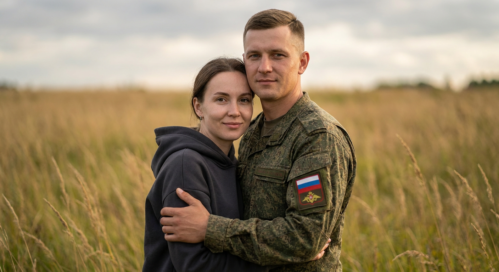
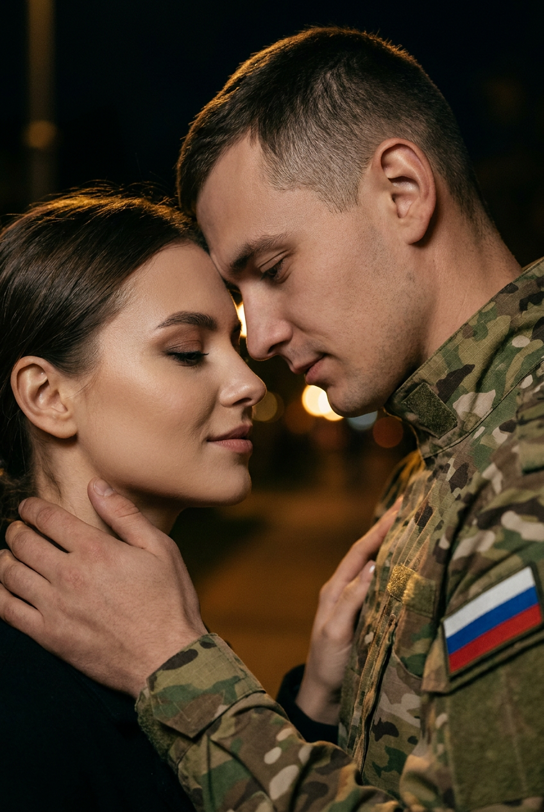
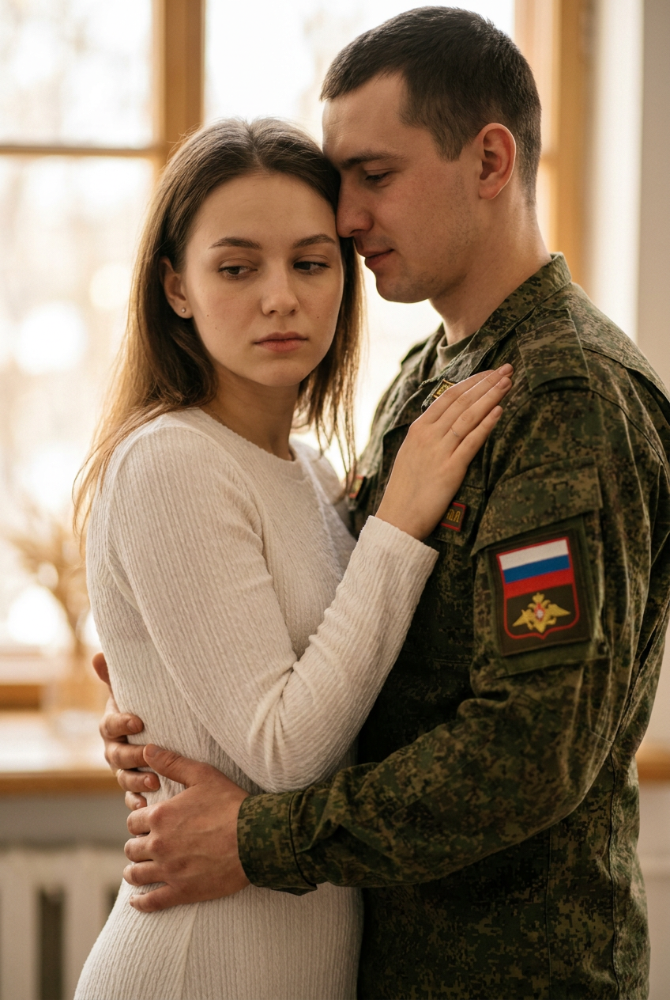
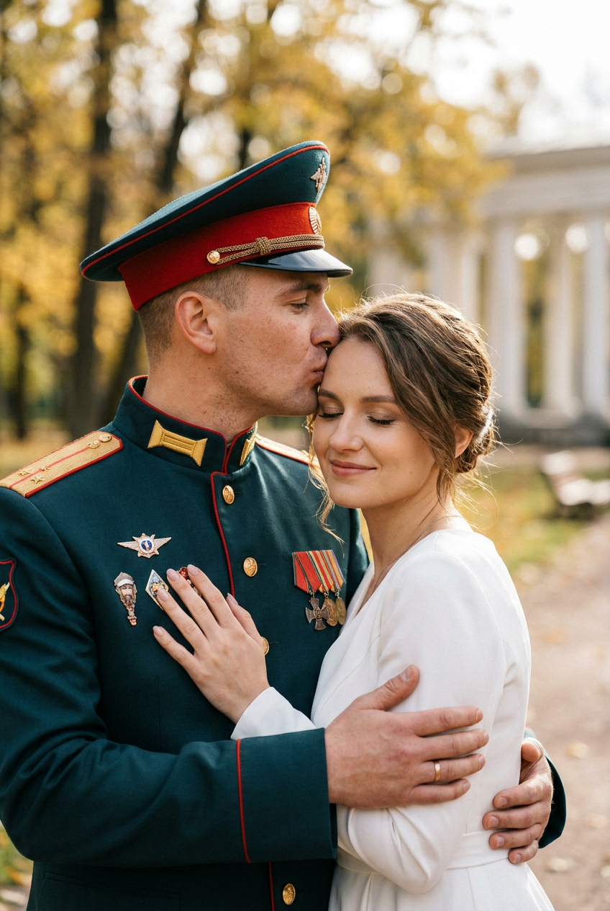
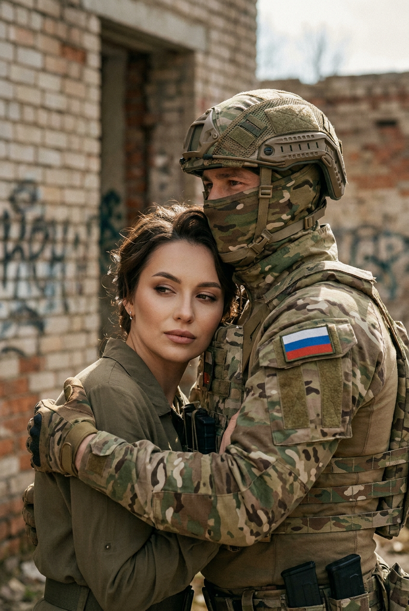
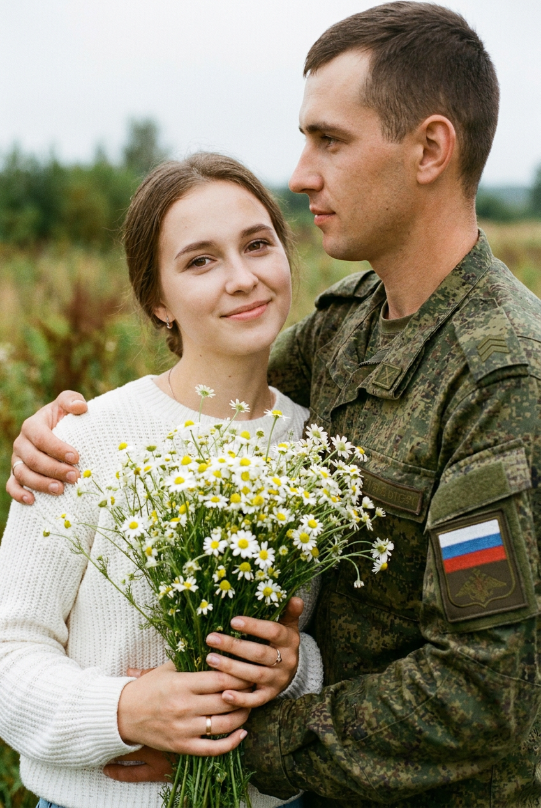

ИИ-фото с военным: 10 промптов для нейросети

Снимок с любимым человеком в военной форме сложно сделать убедительным даже в студии: нейросеть часто искажает лица, пальцы, шевроны и детали экипировки. Хороший промпт решает эту проблему — задаёт позу, одежду, свет, композицию и настроение ещё до генерации.
В подборке — 10 сценариев для романтических ИИ-фото: объятия в камуфляже, поцелуй у классической архитектуры, ночной портрет, парадная форма с медалями, тактическая экипировка и нежный кадр с букетом ромашек.
Как сгенерировать такое фото: пошагово
Нужен снимок анфас при ровном свете, лицо в кадре целиком, без тёмных очков и головных уборов. Разрешение от 1000 пикселей по короткой стороне. Чем чётче исходник, тем точнее модель повторит черты.
Выберите сценарий ниже и нажмите «Копировать» — текст уйдёт в буфер целиком, вместе с командой сохранения внешности. Эта команда стоит первой строкой и отвечает за то, чтобы на выходе было ваше лицо, а не случайное.
Кнопка «Сгенерировать» рядом с каждым промптом открывает модель в новой вкладке. Nano Banana Pro работает с референсом лица — в отличие от моделей, которые генерируют портрет с нуля и узнаваемость теряют.
Промпт — в поле ввода, портрет — через загрузку референса. Порядок значения не имеет, но без референса команда сохранения внешности работать не будет: модели нечего сохранять.
Для сторис и ленты берите 9:16, для превью и обложек — 4:3. Первый результат редко идеален: если поза или свет ушли не туда, поправьте соответствующую часть промпта и запустите заново. Обычно хватает двух-трёх итераций.
10 промптов для генерации
1. Объятия в камуфляже
Строго сохранить внешность по загруженному референсу: черты лица, пропорции, мимику и текстуру кожи без изменений. Фотореалистичная кинематографичная постановочная фотография, вертикальный формат 4:5, объектив 50 мм, мягкий естественный свет. На переднем плане стоит пара в романтическом объятии. Справа и ближе к центру — военнослужащий ВС РФ в пятнистой или цифровой камуфляжной форме с правдоподобной фактурой ткани, швами и складками. Он немного повёрнут к камере, смотрит прямо или чуть в сторону, выражение лица спокойное и уверенное. Мужчина обнимает женщину за талию и корпус; кисти полностью видны, пальцы анатомически правильные. Слева — молодая женщина с мягкой улыбкой и естественным макияжем, в чёрном облегающем платье с реалистичной драпировкой и умеренным блеском ткани. Она прижимается к мужчине. Лица обоих должны точно соответствовать загруженному референсу: сохранить форму глаз, бровей, носа, губ, овал, мимику и пропорции, не менять внешность.
2. Поцелуй у колонн

Строго сохранить внешность по загруженному референсу: черты лица, пропорции, мимику и текстуру кожи без изменений. Вертикальная фотореалистичная фотография на улице, репортажно-кинематографичный стиль, полный рост, объектив 85 мм, высокая детализация. Романтическая пара находится у массивной каменной лестницы и мраморных колонн классического здания. Мужчина — военнослужащий ВС РФ в церемониальной форме: тёмно-синий китель с золотыми галунами и погонами, брюки того же цвета, форменные ботинки, тёмно-синяя парадная фуражка. Его лицо видно в профиль или лёгком полуобороте; он спокойно наклоняется к женщине для поцелуя. Женщина обнимает его руками за шею и торс и также тянется навстречу. Сохранить индивидуальные черты обоих лиц по загруженному референсу, естественную мимику и пропорции. Камень, металл и ткань должны выглядеть натурально, без пластикового эффекта; фон слегка размыт, но архитектура узнаваема.
3. Поддержка после службы

Строго сохранить внешность по загруженному референсу: черты лица, пропорции, мимику и текстуру кожи без изменений. Фотореалистичный вертикальный портрет, средний план, объектив 70 мм, мягкий рассеянный свет. Слева находится мужчина-военнослужащий в тактическом лесном или пиксельном камуфляже, бежево-коричневом бронежилете с системой MOLLE, шлеме с креплениями, наушниками и гарнитурой. Он показан со спины и немного в профиль; хорошо видны ремни, швы, фактура материалов и нашивка с флагом Российской Федерации на шлеме, без читаемых надписей. Справа стоит молодая женщина и бережно обнимает военного за руку. На ней камуфляжная куртка или костюм и белая рубашка с тонкой золотистой вышивкой на рукавах; ткань мягко драпируется. Настроение спокойное, поддерживающее, без агрессии и боевой динамики. Лица мужчины и женщины точно повторяют загруженный референс, сохраняя черты, мимику и пропорции.
4. На руках у военного

Строго сохранить внешность по загруженному референсу: черты лица, пропорции, мимику и текстуру кожи без изменений. Кинематографичная фотореалистичная фотография вертикального формата, кадр в полный рост или чуть выше колен, объектив 50 мм, естественный дневной свет. Мужчина-военнослужащий ВС РФ в цифровой или пятнистой камуфляжной форме уверенно держит девушку на руках и обнимает её обеими руками за корпус. Ладони, пальцы и положение рук анатомически корректны. На рукаве заметна нашивка в цветах флага РФ, но без текста и логотипов. У формы видны реалистичные складки, швы, ремни и фактура, на ногах — высокие военные ботинки. Девушка прижимается к мужчине; её волосы слегка растрёпаны ветром, на ней тёмное пальто или пуховик и тёмные брюки. Сохранить лица пары по загруженному референсу без изменения внешности, с естественной мимикой и правильными пропорциями. Композиция романтическая, фон нейтральный, без боевой сцены.
5. Объятие на поле

Строго сохранить внешность по загруженному референсу: черты лица, пропорции, мимику и текстуру кожи без изменений. Фотореалистичный портрет по пояс, вертикальный кадр 4:5, объектив 85 мм, открытое поле или луг на заднем плане, мягкий дневной свет. Справа стоит военнослужащий ВС РФ в пятнистой камуфляжной форме, слегка повернувшись боком к камере. У него аккуратная короткая стрижка и спокойное уверенное выражение лица; на правом рукаве видна нашивка или флаг Российской Федерации без мелких надписей. Ткань формы должна передавать настоящие швы, петли, резинки, складки и плотную фактуру. Слева — молодая женщина в тёмном худи графитового или чёрного цвета. Она прижата к мужчине, её поза естественна, на лице лёгкая улыбка и нежный взгляд в камеру. Военный поддерживает её одной рукой. Черты лиц, форма глаз, губ, носа, бровей, овал и мимика точно соответствуют загруженному референсу; без деформаций и изменения внешности.
6. Ночной поцелуй

Строго сохранить внешность по загруженному референсу: черты лица, пропорции, мимику и текстуру кожи без изменений. Кинематографичная фотореалистичная фотография пары ночью, вертикальный close-up по грудь, объектив 85 мм, малая глубина резкости f/1.8. На заднем плане — тёмная улица или парк, далеко видны тёплые расфокусированные огни с мягким боке. Справа мужчина-военнослужащий ВС РФ в пятнистой или мультикам-форме; в кадре заметны воротник, карманы, швы и естественные складки ткани. На рукаве или плече расположена нашивка с российской символикой, без читаемого текста и брендовых знаков. Мужчина наклоняется к женщине, его выражение нежное и спокойное. Слева находится девушка с естественным макияжем и акцентом на глаза, она близко прижата к нему. Лица обоих точно повторяют загруженный референс: сохранить индивидуальные черты, мимику и пропорции. Свет тёплый, мягкий, без жёстких бликов и пересветов.
7. Тихое объятие

Строго сохранить внешность по загруженному референсу: черты лица, пропорции, мимику и текстуру кожи без изменений. Фотореалистичный кинематографичный портрет, вертикальная ориентация, план по грудь, объектив 70 мм, мягкий боковой свет. Слева и в центре — молодая женщина в белом свитере, платье или кофте с длинными рукавами; хорошо видны фактура ткани, складки и естественная посадка. У неё лёгкий румянец и задумчивое спокойное выражение: взгляд направлен вниз или в сторону, губы мягко сомкнуты. Женщина прижата к мужчине и обнимает его в области груди или талии. Справа стоит военнослужащий ВС РФ в пятнистой или цифровой камуфляжной форме, вплотную к ней, с мягким сдержанным выражением. Он держит женщину руками; на рукаве заметна российская символика без читаемых надписей. Лица пары должны соответствовать загруженному референсу, сохранять индивидуальные черты, естественную мимику и реальные пропорции.
8. Поцелуй в висок

Строго сохранить внешность по загруженному референсу: черты лица, пропорции, мимику и текстуру кожи без изменений. Постановочная фотореалистичная фотография на улице, вертикальный mid shot до плеч, объектив 50 мм, мягкий дневной свет. Справа находится военнослужащий ВС РФ в парадной форме: тёмно-зелёный мундир с красной окантовкой, золотыми пуговицами, декоративным кантом и парадными погонами. На груди несколько реалистичных медалей и орденов на колодках с цветными лентами, без читаемого текста и логотипов. На голове тёмно-зелёная фуражка с яркой красно-оранжевой окантовкой и металлической эмблемой без надписей. Мужчина слегка наклоняется и целует женщину в лоб или висок; выражение лица спокойное и заботливое. Женщина стоит рядом, принимает объятие. Сохранить лица по загруженному референсу, включая форму глаз, носа, губ, бровей, овал и мимику. Материалы формы, металл и кожа должны выглядеть натурально, фон — слегка размытый.
9. Тактическое объятие

Строго сохранить внешность по загруженному референсу: черты лица, пропорции, мимику и текстуру кожи без изменений. Фотореалистичный кинематографичный портрет пары, вертикальный medium close-up, объектив 70 мм, высокая детализация лиц и экипировки. Справа — военнослужащий ВС РФ в современной тактической одежде: пятнистый или мультикам-камуфляж, шлем с креплениями и тактической лицевой частью или маской, закрывающей большую часть лица. Видны ремешки, стропы, фиксаторы, швы, строчки, элементы разгрузки, карманы и края ткани; материалы должны выглядеть как настоящий текстиль и пластик. На правом рукаве или плече — нашивка с флагом РФ без мелкого текста и логотипов. Слева — молодая женщина, которая мягко обнимает его за руку или плечо; выражение лица спокойное, доверительное. Сохранить лица по загруженному референсу, не искажать глаза, губы, нос и овал. Атмосфера романтическая и поддерживающая, без оружия, стрельбы и агрессивной позы.
10. Букет белых ромашек

Строго сохранить внешность по загруженному референсу: черты лица, пропорции, мимику и текстуру кожи без изменений. Фотореалистичная кинематографичная фотография, вертикальный medium close-up по грудь и плечи, объектив 85 мм, мягкий дневной свет в пасмурную погоду. На переднем плане молодая женщина с естественным макияжем, спокойной мягкой улыбкой и взглядом в сторону камеры. На ней белый вязаный свитер с хорошо различимой фактурой пряжи, складками и правильной посадкой рукавов. Она держит перед собой огромный букет белых ромашек или полевых маргариток на уровне груди. У цветов тонкие стебли и мелкие лепестки: часть букета находится в резком фокусе, остальные постепенно уходят в мягкое размытие. Кисти и пальцы анатомически корректны, без лишних пальцев и с естественным хватом. Рядом присутствует парень-военнослужащий, его лицо и внешность соответствуют загруженному референсу; он остаётся мягко размытым или частично скрытым букетом. Сохранить естественные пропорции лиц и реалистичную цветопередачу.
Что важно учесть в этом стиле
Романтический кадр с военным держится на контрасте: строгая форма и мягкая эмоция, плотная фактура экипировки и живой контакт между героями. Поэтому в промпте лучше отдельно описывать одежду, позу, выражение лица, источник света и фон. Если перечислить всё одной длинной фразой, нейросеть может потерять часть деталей.
Для портрета подойдут объективы 70–85 мм и диафрагма f/1.8–f/2.8: лицо останется главным, а фон уйдёт в аккуратное боке. Для полного роста лучше использовать 35–50 мм и явно указать вертикальное соотношение 4:5 или 2:3. Нашивки, медали и мелкие элементы формы стоит просить без текста — генераторы часто превращают надписи в набор символов.
Идеи для вариаций
- Перенесите сцену на железнодорожную платформу, в аэропорт или к городскому вокзалу.
- Замените дневной свет на золотой час, снегопад, дождь или свет фонарей после заката.
- Добавьте чемодан, письмо, полевые цветы или небольшой снимок в руках девушки.
- Сделайте кадр в стилистике плёночной фотографии с лёгким зерном и приглушёнными цветами.
- Попросите нейросеть показать героев со спины, оставив акцент на жесте объятия и деталях формы.
Как собрать свой промпт
Начните с технической основы: вертикальный или горизонтальный кадр, крупность плана, объектив, свет и глубина резкости. Затем опишите героев по отдельности — кто где стоит, во что одет, куда смотрит и как взаимодействует с партнёром. После этого добавьте локацию, настроение и требования к фактуре материалов.
Для сохранения внешности прикрепите один качественный референс без сильных фильтров и повторите в запросе, что черты лица, мимика и пропорции должны остаться неизменными. Если генератор допускает настройки, начните с 4–8 вариантов, выберите лучший, а затем исправьте руки, шевроны и мелкие детали отдельной перегенерацией.
Ошибки, из-за которых кадр не получается
- Слишком много деталей в одном предложении. Разделяйте описание героев, позы, одежды, света и фона.
- Неуточнённый план. Без слов «по грудь», «по пояс» или «полный рост» нейросеть сама выберет кадрирование.
- Сложные надписи на форме. Просите убрать текст и логотипы, если они не нужны для сюжета.
- Неестественные объятия. Указывайте положение каждой руки и требуйте анатомически корректные кисти.
- Смешение парадной и тактической формы. Заранее выберите один тип одежды и перечислите его элементы.
- Переэкспонированное лицо. Добавьте мягкий рассеянный свет, натуральный оттенок кожи и отсутствие жёстких бликов.
Частые вопросы
Как сделать такое ИИ-фото бесплатно?
Можно попробовать Kandinsky и Шедеврум — они подходят для генерации по тексту, но точность работы с референсом, лицами, руками и формой может быть ограниченной. В Krea AI и Arena.ai обычно удобнее экспериментировать с визуальными настройками и референсами, однако доступные функции и лимиты меняются. Бесплатные варианты часто дают меньше попыток, более низкое разрешение и требуют нескольких перегенераций.
Как сохранить лицо человека на ИИ-фото?
Используйте чёткий референс анфас или в лёгком полуобороте, без очков, сильных теней и фильтров. В промпте отдельно просите сохранить форму глаз, носа, губ, бровей, овал лица и естественную мимику. После генерации проверьте лицо на крупных планах: иногда удачный общий кадр требует отдельной коррекции портрета.
Почему нейросеть искажает руки и форму?
Руки сложнее всего для генерации, особенно когда герои обнимаются или один человек держит другого. Указывайте положение кистей, число видимых рук и требование к анатомически правильным пальцам. Форму описывайте по слоям: куртка или китель, воротник, карманы, погоны, шевроны, ремни и обувь.
Как получить реалистичный военный портрет без лишних надписей?
Добавьте в запрос «без читаемого текста, брендов и логотипов», а акцент перенесите на ткань, швы, складки, металлические детали и посадку одежды. Для реализма задайте конкретный свет и объектив, например 85 мм, f/2.0, мягкий боковой свет. Если символика и медали выглядят неправдоподобно, упростите их и повторите генерацию с меньшим количеством мелких деталей.